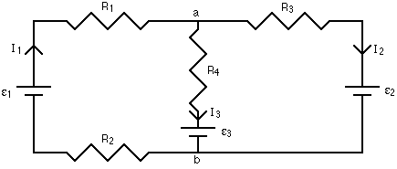

Junction Theorem
At any junction in a circuit the current entering the junction must equal the current leaving the junction.
(This is nothing more than a statement of conservation of charge)
Loop Theorem
The sum of the changes in potential when traversing any complete loop is zero.
(This is equivalent to conservation of energy)

As usual, in order to ensure consistent results from application of these laws, we must adhere to several conventions concerning the currents and potentials in circuits.
Potentials:
- When a resistive device is traversed in the direction of current flow the change in potential is -iR. Conversely, if the resistance is traversed opposite to the direction of the current the potential change is +iR.
- When an emf is traversed in the direction of the emf the change in potential is +ε. Conversely, if the emf is traversed opposite to the emf direction the change in potential is -ε.
Currents:
In setting up a problem, the current direction in any particular circuit element is assigned arbitrarily. Kitchoff's laws are then applied to the circuit using these current directions. After solving the resulting equations if a current is negative that means the "actual" current direction is opposite the arbitrarily chosen direction.
Kirchhoff's laws can be applied to any circuit to obtain a set of equations relating the currents, resistances and emfs in the circuit. These equations can then be solved for the unknown quantities in the circuit. For any circuit follow the steps below.
- Label the current flowing in each part of the circuit, bearing in mind that current will "split" on reaching a junction. The direction of the defined direction of the current does not matter - see current convention above.
- At each junction in the circuit use the junction theorem to write down the equations relating the currents entering and leaving.
- Define all possible loops in the circuit and label.
- For each loop choose a starting location then use the loop theorem to write down the equation relating changes in potential which must be zero after traversing the complete loop.
- Solve the set of equations from 2. and 4. to obtain the unknown parameters of the circuit.
As an example, consider the circuit below. With the 3 emfs we cannot use the series/parallel analysis.

Junctions:
a: I1 = I2 + I3Loops:
b: I3 + I2 = I3
1 (including ε1 starting at a traversing clockwise): - I3R4 - ε3 - I1R2 + ε1 - I1R1 = 0Looking at these equations it is clear that the two junction equations are equivalent, and that loop equation 3 is simply the sum of loop equations 1 and 2. Therefore there are only 3 independent equations (a, 1 and 2), which we can solve for, say, the currents I1, I2 and I3.
2 (including ε2 starting at a traversing clockwise): - I2R3 - ε2 + ε3 + I3R4 = 0
3 (including ε1 and ε2 starting at a traversing clockwise): - I2R3 - ε2 - I1R2 + ε1 - I1R1 = 0
Note that in more complicated circuits there will be many more junctions and a large number of possible loops. You only need apply the loop theorem to as many loops to obtain the number of independent equations necessary to determine the unknown parameters. That is if you have 3 unknown quantities, you'll need a total of 3 independent equations.
What do you get if you have Avogadro's number of donkeys?
Dr. C. L. Davis
Physics Department
University of Louisville
email: c.l.davis@louisville.edu